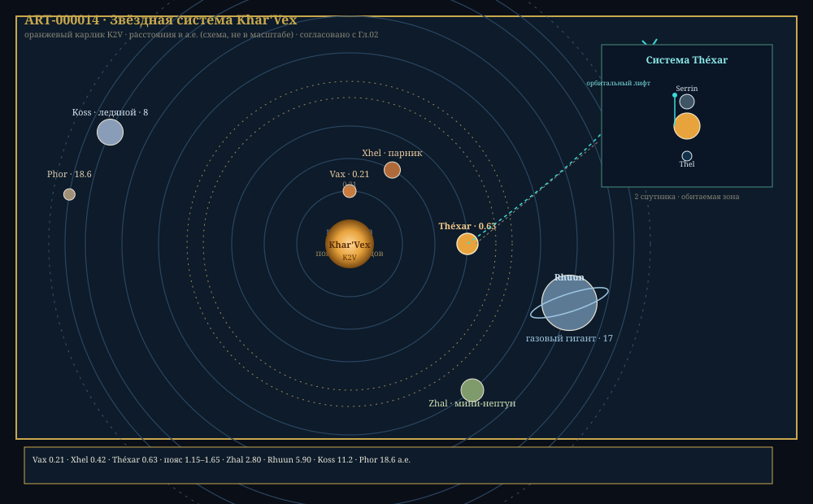

Глава 2: Звёздная система Khar'Vex
«Когда первые астрономы подняли глаза к небу и увидели, что звезда не одна — что миры вращаются вокруг миров — они поняли: они не просто на планете. Они в системе.» — Из трактата «Небесный порядок», аноним, ок. −5 800 г. цив.
Связанные разделы: → см. [Гл.01, «Спецификация вселенной»], → см. [Гл.03, «Планета Théxar»], → см. [Гл.09, «Технологии»] Объём: 40 страниц
Введение
Звёздная система — это гравитационно связанная конфигурация, в которой одна звезда (или несколько) удерживает вокруг себя множество меньших тел: планеты, астероиды, кометы, пыль. Система Khar'Vex — дом цивилизации Xha'Ruun — представляет собой хорошо упорядоченную архитектуру из восьми планет, пояса астероидов и обширной внешней области ледяных тел.
Понимание структуры звёздной системы необходимо для ответа на ключевые вопросы: почему Théxar стал обитаемым, какие ресурсы доступны цивилизации, с какими космическими угрозами она сталкивается и куда она может расширяться.
2.1 Звезда Khar'Vex: подробный профиль
2.1.1 Общие параметры
ПРОФИЛЬ: Звезда Khar'Vex
Параметр Значение Спектральный класс K2V Масса 0.82 звёздной массы Радиус 0.78 звёздного радиуса Светимость 0.41 звёздной светимости Температура фотосферы 2 643°X Возраст 6.5 млрд циклов Металличность [Fe/H] +0.12 Период вращения 28.5 сут Наклон оси 7.3° Светимость в рентгене 3.1 × 10²⁷ эрг/миг Активность (индекс log R'HK) −5.02
Спектральная классификация: K2V — оранжевый карлик главной последовательности. Второй индекс «V» указывает на то, что звезда находится на главной последовательности, стабильно сжигая водород в ядре. Подкласс «K2» означает, что температура фотосферы (~2 643°X) помещает её в нижнюю часть диапазона K-звёзд.
КЛЮЧЕВОЙ ФАКТ
Оранжевые карлики (спектральный класс K) считаются «оптимальными» звёздами для возникновения сложной жизни. Они обладают сроком жизни на главной последовательности до 20–30 млрд циклов (в 2–3× дольше звёзд класса G), что даёт эволюции на порядок больше времени. При этом они достаточно ярки, чтобы поддерживать фотосинтез, и достаточно спокойны, чтобы не стерилизовать планеты вспышками.
2.1.2 Внутреннее строение
Как и другие звёзды класса K, Khar'Vex имеет лучистое ядро и конвективную внешнюю оболочку. Граница между этими зонами (тахоклин) расположена глубже, чем у звёзд класса G — на ~0.65 радиуса, что объясняет более низкую магнитную активность.
ВНУТРЕННЕЕ СТРОЕНИЕ KHAR'VEX
(схема)
╱╲
╱ ╲
╱ ☀ ╲ <── Фотосфера (2 643°X)
╱ ╲
╱ ╲
╱ ░░░░░░░░░ ╲ <── Конвективная зона
╱ ░░░|░░░░░░░ ╲ (0.65 R — 1.0 R)
╱ ░░░░|░░░░░░░░ ╲
╱ ░░░░░|░░░░░░░░░ ╲
╱ ──────|─────── ╲ <── Тахоклин
╱ ══════|═══════ ╲
╱ ══════|═══════ ╲ <── Лучистая зона
╱ ══════|══════ ╲ (0 — 0.65 R)
╱ ══════|══════ ╲
╱ ══════╪══════ ╲
╱ ══════╪═════ ╲
╱ ══════╪════ ╲
╱ ══════╪═══ ╲
╱ ЯДРО╪══ ╲
╪══
T_ядро ≈ 4.46 × 10⁶ °X
ρ_ядро ≈ 95 г/см³
Энерговыделение: ~1.6 × 10³⁴ эрг/миг
Рис. 2.1. Внутреннее строение звезды Khar'Vex. Ядро (до 0.25 R) — термоядерный реактор, где водород превращается в гелий. Лучистая зона переносит энергию излучением. Конвективная зона перемешивает плазму, создавая магнитное поле.
2.1.3 Спектр и цвет
Спектр Khar'Vex смещён в красную область. Пик излучения приходится на ~570 нм (жёлто-оранжевый).
Этот спектральный сдвиг имел фундаментальное значение для эволюции жизни на Théxar:
- Фотосинтезирующие пигменты Xha'Ruun эволюционировали для поглощения в оранжево-красной области — пик поглощения ~570–620 нм
- Зрение Xha'Ruun включает тетрахроматический охват с максимумом чувствительности в жёлто-оранжевом диапазоне
- Относительный дефицит УФ-излучения позволил жизни выйти на сушу — с меньшим риском мутагенного повреждения (УФ-излучение составляет ~1.5% от общего, против ~5% у звёзд класса G)
- Небо Théxar имеет характерный золотисто-бронзовый оттенок (→ см. [Гл.03, «Атмосфера»])
2.1.4 Магнитная активность и циклы
Khar'Vex демонстрирует цикл магнитной активности с меньшей амплитудой, чем у звёзд класса G. Количество пятен в максимуме цикла составляет ~30–40% от типичного для G-карликов.
| Параметр | Khar'Vex |
|---|---|
| Цикл активности | 9.1 лет |
| Пятна в максимуме | 30–40% |
| Вспышки (X-класс) | 1–2 за цикл |
| Корональные выбросы массы | Редкие, слабые |
| Вариация светимости | ±0.08% |
КЛЮЧЕВОЙ ФАКТ
Спокойный характер Khar'Vex — одна из причин, по которым Théxar смог развить сложную жизнь. Если бы звезда была более активной (как молодые K-карлики), регулярные вспышки могли бы стерилизовать поверхность планеты. «Окно спокойствия» открылось ~3 млрд циклов назад, когда звезда стабилизировалась.
2.1.5 Будущее Khar'Vex
Как звезда массой 0.82, Khar'Vex проведёт на главной последовательности ~17 млрд лет (время измеряется в циклах от текущего). Текущий возраст (6.5 млрд циклов) означает, что звезда прошла примерно треть своего жизненного пути.
| Этап | Время отн. настоящего | Что происходит |
|---|---|---|
| +0 | Сейчас | Стабильное горение водорода |
| +~6 млрд лет | Водород в ядре заканчивается | Звезда начинает расширяться |
| +~7 млрд лет | Субгигант | Светимость растёт в 2–3× |
| +~8 млрд лет | Красный гигант (фаза RGB) | Радиус увеличивается в десятки раз, светимость в сотни |
| +~8.5 млрд лет | Воспламенение гелия (вспышка) | Кратковременная стабилизация |
| +~9 млрд лет | Горизонтальная ветвь | Горение гелия в ядре |
| +~9.3 млрд лет | Асимптотическая ветвь гигантов | Радиус достигает орбиты Théxar |
| +~9.5 млрд лет | Планетарная туманность | Сброс внешних слоёв |
| +~9.6 млрд лет | Белый карлик | Остывание в течение триллионов лет |
Практическое следствие: у цивилизации Xha'Ruun есть не менее 1.2–1.5 млрд циклов на то, чтобы покинуть Théxar до того, как рост светимости Khar'Vex сделает её непригодной для жизни.
2.2 Формирование и архитектура системы
2.2.1 Происхождение
Система Khar'Vex сформировалась ~6.5 млрд циклов назад из молекулярного облака, обогащённого тяжёлыми элементами (металличность +0.12).
2.2.2 Обзор планетной системы
ТАБЛИЦА 2.1: Планетная система Khar'Vex (основные параметры)
Планета Тип a (а.е.) Масса Радиус Период Эксц. Спутники Vax Раскалённый каменный 0.21 0.43 0.63 33.6 сут 0.03 0 Xhel Парниковый 0.42 0.92 0.95 92.8 сут 0.01 0 Théxar Обитаемый 0.63 1.00 1.00 202 сут 0.018 2 Пояс Астероиды 1.15–1.65 0.03 — — — — Zhal Мини-нептун 2.80 6.7 2.2 3.73 года 0.05 3 Rhuun Газовый гигант 5.90 103.7 10.1 11.4 года 0.04 17 Koss Ледяной гигант 11.2 16.0 4.0 29.9 года 0.03 8 Phor Карликовая планета 18.6 0.02 0.13 62.3 года 0.21 1
Масса и радиус планет даны относительно Théxar. А.е. (астрономическая единица) = большая полуось орбиты Théxar.
2.2.3 Архитектура системы

Рис. 2.2. Карта-схема звёздной системы Khar'Vex: орбиты планет, пояс астероидов, врезка системы Théxar, траектория зонда. Théxar расположен в центральной части обитаемой зоны; классическая архитектура — каменные планеты внутри, газовые гиганты снаружи — ART-000014.
2.2.4 Обитаемая зона
Обитаемая зона — диапазон орбит, на которых температура позволяет существовать жидкой воде на поверхности планеты при достаточном атмосферном давлении.
| Параметр | Значение | Примечание |
|---|---|---|
| Внутренняя граница (консерв.) | 0.44 а.е. | Испарение океанов |
| Внешняя граница (консерв.) | 0.82 а.е. | Максимальный парниковый эффект |
| Внутренняя граница (оптимист.) | 0.38 а.е. | Для тонких атмосфер |
| Внешняя граница (оптимист.) | 0.95 а.е. | При плотной CO₂-атмосфере |
| Положение Théxar | 0.63 а.е. | В центре обитаемой зоны |
Благодаря расположению в центре обитаемой зоны, Théxar обладает бóльшим запасом прочности — рост светимости Khar'Vex на ~10% в ближайший миллиард циклов сделает планету жаркой, но не уничтожит жизнь полностью.
2.3 Внутренние планеты
2.3.1 Vax: раскалённый мир
ПРОФИЛЬ: Vax
Параметр Значение Большая полуось 0.21 а.е. Масса 0.43 (отн. Théxar) Радиус 0.63 (отн. Théxar) g 13.3 ша/миг² Температура поверхности +273°X (день) / +143°X (ночь) Атмосфера Отсутствует Период вращения 33.6 сут (приливной захват) Тектоника Неактивна
Vax — ближайшая к звезде планета, испытавшая приливной захват. Одна сторона постоянно обращена к Khar'Vex (раскалённая, +273°X), другая — в вечной тьме (+143°X — всё ещё горячо из-за мощного парникового слоя остаточной атмосферы).
Интерес для цивилизации: Vax не обладает ресурсами, доступными для добычи. Однако её гравитационное поле используется для гравитационных манёвров зондов, направляющихся к внутренним регионам системы.
2.3.2 Xhel: парниковая ловушка
ПРОФИЛЬ: Xhel
Параметр Значение Большая полуось 0.42 а.е. Масса 0.92 (отн. Théxar) Радиус 0.95 (отн. Théxar) g 12.3 ша/миг² Атмосфера CO₂ (96%), N₂ (3%), SO₂ (0.5%), следы Давление у поверхности 455 тяж Температура поверхности +296°X Период вращения 92.8 сут (приливной захват)
Xhel — классический пример неконтролируемого парникового эффекта. Находясь слишком близко к звезде, планета потеряла океаны. Оставшаяся атмосфера из CO₂ создала чудовищное давление, нагревающее поверхность до температур, превышающих точку плавления свинца.
СВЯЗЬ
Xhel служит для Xha'Ruun предостережением и лабораторией. Изучая эту планету, климатологи Théxar лучше понимают границы обитаемости. Кроме того, верхние слои атмосферы Xhel (на высоте 73–97 км, где температура ≈ 45°X) используются как база для исследовательских станций — → см. [Гл.09, «Планетарные базы»].
Несмотря на адские условия, Xhel имеет научную ценность:
- Плотная атмосфера позволяет аэродинамическое торможение зондов
- Верхние слои атмосферы содержат изотопы гелия и дейтерий
- Геологически активна (вулканизм за счёт приливного нагрева)
2.4 Пояс астероидов (Orbital Belt)
Между орбитами Théxar и Zhal, на расстоянии 1.15–1.65 а.е. от Khar'Vex, расположен пояс астероидов — остаток протопланетного диска, не сумевший сформировать полноценную планету из-за гравитационного влияния Rhuun.
ПРОФИЛЬ: Пояс астероидов
Параметр Значение Расстояние от звезды 1.15–1.65 а.е. Общая масса 0.03 (отн. Théxar) Количество объектов >10 км (диам.) ~35 000 Количество объектов >100 км (диам.) ~120 Крупнейший объект Veksarr (диаметр 412 км) Состав Каменные (80%), металлические (15%), углеродистые (5%)
Veksarr — крупнейший астероид пояса, имеющий собственную гравитацию и классифицируемый как карликовая планета. Его ядро богато никель-железными сплавами и платиноидами.
КЛЮЧЕВОЙ ФАКТ
Пояс астероидов — главный минерально-сырьевой ресурс цивилизации Xha'Ruun. Добыча металлов (Fe, Ni, Pt, Au, Rh) ведётся на ~40 крупнейших астероидах. Один астероид диаметром 1 км может содержать больше платины, чем было добыто за всю историю Théxar.
2.5 Внешние планеты
2.5.1 Zhal: мини-нептун
ПРОФИЛЬ: Zhal
Параметр Значение Большая полуось 2.80 а.е. Масса 6.7 (отн. Théxar) Радиус 2.2 (отн. Théxar) Плотность 4.1 г/см³ Атмосфера H₂ (80%), He (18%), CH₄ (1.5%), H₂O (0.3%) Температура (1 тяж) −32°X Период обращения 3.73 года Спутники 3
Zhal — промежуточный тип между планетой класса Théxar и ледяным гигантом. Толстая водородно-гелиевая атмосфера (глубиной ~3 660 ша) скрывает каменно-ледяное ядро массой ~3.8 (отн. Théxar).
Значение для Xha'Ruun: Zhal — потенциальный источник гелия-3 (ключевого топлива для термоядерных реакторов) из его верхней атмосферы. Беспилотные зонды регулярно проводят забор проб. → см. [Гл.09, «Энергетика»]
2.5.2 Rhuun: властелин колец
ПРОФИЛЬ: Rhuun
Параметр Значение Большая полуось 5.90 а.е. Масса 103.7 (отн. Théxar) Радиус 10.1 (отн. Théxar) Плотность 0.78 г/см³ Атмосфера H₂ (86%), He (13%), CH₄ (0.8%), NH₃ (0.1%) Температура (1 тяж) −53°X Период обращения 11.4 года Кольца Да (4 основных, 2 тонких) Спутники 17 Крупнейший спутник Thalass (диаметр 2 840 км)
Rhuun — газовый гигант, доминирующая гравитационная сила внешней системы. Его масса составляет ~20% от массы всех планет и астероидов системы вместе взятых (кроме самой звезды).
Система колец Rhuun — величественное зрелище, видимое с Théxar в телескоп как яркое кольцо шириной ~24 400 мо, состоящее из ледяных и каменных частиц размером от пылинок до валунов в 12 ша.
КЛЮЧЕВОЙ ФАКТ
Крупнейший спутник Rhuun — Thalass — является основным кандидатом для внепланетной колонизации. Он обладает:
- Разреженной азотно-метановой атмосферой (0.08 атм — ≈0.08 тяж)
- Подповерхностным океаном жидкой воды (под ледяной корой толщиной ~24 400 ша)
- Геологической активностью (приливной нагрев от Rhuun)
- Наличием сложных органических соединений
2.5.3 Koss: ледяной гигант
ПРОФИЛЬ: Koss
Параметр Значение Большая полуось 11.2 а.е. Масса 16.0 (отн. Théxar) Радиус 4.0 (отн. Théxar) Плотность 1.8 г/см³ Состав H₂O, CH₄, NH₃ (льды) + H₂/He атмосфера Температура (1 тяж) −91°X Период обращения 29.9 года Спутники 8
Koss — ледяной гигант. Его характерный бледно-голубой цвет объясняется метановой дымкой в верхних слоях атмосферы. Наклон оси: 82° — планета «лежит на боку», что создаёт экстремальные сезонные эффекты на полюсах.
2.5.4 Phor: окраинный страж
Phor — карликовая планета на дальней окраине системы, на орбите с высоким эксцентриситетом (0.21). Её орбита простирается от 14.7 до 22.5 а.е. от звезды, пересекая внешние области системы по эллиптической траектории.
Phor состоит преимущественно из водяного и метанового льда, с небольшим каменным ядром. Её единственный спутник — крошечный ледяной обломок диаметром ~30 км.
ТЕРМИН: Облако Кха́р
Внешняя область системы Khar'Vex, простирающаяся от ~30 до ~800 а.е. от звезды. Содержит ~10¹²–10¹³ кометных ядер — ледяных тел размером от 0.1 до 20 км. Является источником долгопериодических комет, время от времени посещающих внутреннюю систему.
2.6 Гелиосфера и космическая погода
2.6.1 Звёздный ветер
Khar'Vex испускает поток заряженных частиц (звёздный ветер) со средней скоростью ~775 мо/миг и плотностью ~2 частицы/см³ на орбите Théxar.
| Параметр | Khar'Vex (на 0.63 а.е.) |
|---|---|
| Скорость ветра | ~775 мо/миг |
| Плотность | ~2 см⁻³ |
| Напряжённость МП | ~3 нТл |
| Температура | ~4.4 × 10⁴ °X |
2.6.2 Гелиопауза
Граница гелиосферы Khar'Vex — область, где звёздный ветер встречается с межзвёздной средой — находится на расстоянии ~95 а.е. от звезды. За ней начинается межзвёздное пространство.
ГЕЛИОСФЕРА KHAR'VEX (схема)
Межзвёздная среда
═══════════════════════════════════════
│ ↑
│ Гелиопауза (~95 а.е.) │
│ ═══════════╤═══════════╝
│ ╱ │ ╲
│ ╱ │ ╲
│╱ Звёздный ветер ╲
│ ╱ │ ╲ │
│ ╱ │ ╲ │
│ ╱ ╭───☀───╮ ╲ │
│ ╱ │планеты│ ╲ │
│ ╱ ╰───────╯ ╲ │
│ ╱ ╲ │
│╱ ударная волна ╲ │
│═══════════════════════╝ │
│ │
═══════════════════════════════════════
↑
Локальное межзвёздное облако
Рис. 2.6. Структура гелиосферы Khar'Vex. Пузырь звёздного ветра защищает внутреннюю систему от галактических космических лучей.
2.6.3 Радиационная обстановка на Théxar
Благодаря сочетанию:
- Спокойного характера Khar'Vex (редкие вспышки)
- Магнитосферы Théxar
- Плотной атмосферы
— радиационный фон на поверхности Théxar составляет ~0.8 мЗв/год, что является естественным для планеты.
СВЯЗЬ
Низкий радиационный фон — одна из причин, по которым Xha'Ruun живут дольше (→ см. [Гл.05, «Физиология»]), но также причина, по которой они более уязвимы к космической радиации за пределами магнитосферы — важный фактор при планировании космических миссий (→ см. [Гл.09, «Космические технологии»]).
2.7 Кометы и малые тела
2.7.1 Кометы
Кометы — ледяные тела на вытянутых орбитах, доставляющие летучие вещества (воду, CO₂, CH₄, NH₃) из внешней системы во внутреннюю. Для Théxar кометы имеют двоякое значение:
| Аспект | Положительный | Отрицательный |
|---|---|---|
| Вода | Доставка H₂O на поверхность | — |
| Органика | Занос пребиотических молекул | — |
| Столкновения | — | Разрушения, массовые вымирания |
Защита от комет: Xha'Ruun создали систему раннего обнаружения и перехвата потенциально опасных объектов (→ см. [Гл.09, «Планетарная защита»]).
2.7.2 Метеоритная активность
Среднегодовое количество падений метеоритов на Théxar ~7 300 ру в год.
2.8 Система в культуре Xha'Ruun
ЦИТАТА
«Наша звезда — не самая яркая, не самая большая, не самая старая. Но она — наша. И в этом вся её уникальность.»
— Астроном Тха́ш-Вен, публичная лекция «Звёзды и мы», Эра Единства
2.8.1 Планеты в мифологии
В древней мифологии Xha'Ruun (→ см. [Гл.10, «Мифология и религия»]) планеты ассоциировались с семью из семи Голосов творения:
| Планета | Мифологический аналог | Символ |
|---|---|---|
| Vax | Ghal-Thar (разрушение) | Пламя |
| Xhel | The-Xa (гнев природы) | Пепел |
| Théxar | Все Семь (равновесие) | Шестигранник |
| Zhal | Ven-Ash (сокрытие) | Туман |
| Rhuun | Khar-Vex (величие) | Венец |
| Koss | Rass-Ul (покой) | Лёд |
| Phor | Nur-Vek (граница) | Порог |
2.8.2 Названия планет
Все названия планет имеют корни в древнем Xha'Ruun (→ см. [Гл.06, «Этимология»]):
| Название | Корень | Значение |
|---|---|---|
| Vax | vax- | обожжённый, опалённый |
| Xhel | xhel- | скрытый, закрытый |
| Théxar | the- + xar- | земля + мать → «земля-мать» |
| Zhal | zhal- | иней, холод |
| Rhuun | rhuun- | великий, властелин |
| Koss | koss- | тишина, безмолвие |
| Phor | phor- | конец, предел |
2.9 Планетарные исследования
Цивилизация Xha'Ruun к настоящему времени (4 028 Эры Единства) исследовала всю свою звёздную систему с помощью автоматических и пилотируемых миссий.
ХРОНОЛОГИЯ: Освоение звёздной системы
Год Событие +480 Первый орбитальный полёт (Théxar) +620 Первый пролёт мимо Vax +750 Первый орбитальный аппарат у Xhel +1 100 Первый пролёт пояса астероидов, картографирование Veksarr +1 200 Первая высадка на Serrin (спутник) +1 200 Высадка на Thalass (спутник Rhuun) +1 550 Зонд достиг Koss +1 800 Пролёт Phor +2 200 Основание базы на Xhel (аэродинамическая станция) +2 800 Буровая станция на Veksarr (астероид) +3 500 Автоматический зонд к границе гелиосферы +3 800 Запуск межзвёздного зонда к ближайшей звезде +4 028 Настоящее время
Итоги главы 2
Ключевые выводы
- Khar'Vex (K2V) — стабильный оранжевый карлик возрастом 6.5 млрд циклов, ~30% жизненного пути пройдено
- Система классическая: 4 внутренних каменистых региона (включая пояс), 4 внешних газово-ледяных гиганта
- Théxar — в центре обитаемой зоны (0.63 а.е.), с запасом прочности ~1 млрд циклов
- Пояс астероидов — главный ресурсный источник цивилизации
- Rhuun — гравитационный властелин, имеющий 17 спутников, один из которых (Thalass) — кандидат на колонизацию
- Гелиосфера Khar'Vex относительно слаба, что делает магнитосферу Théxar критически важной для защиты жизни
Установленные факты (для CANON.md)
- Khar'Vex: класс K2V, T = 2 643°X — ПОДТВЕРЖДЕНО
- Возраст звезды: 6.5 млрд циклов — ПОДТВЕРЖДЕНО
- 8 планет + астероидный пояс — ПОДТВЕРЖДЕНО
- Théxar: 0.63 а.е., эксц. 0.018 — ПОДТВЕРЖДЕНО
- Serrin (R=425 км) и Thel (R=178 км) — спутники — ПОДТВЕРЖДЕНО
- Veksarr (диаметр 412 км) — крупнейший астероид — ЗАФИКСИРОВАНО
- Thalass (R=2 840 км) — крупнейший спутник Rhuun — ЗАФИКСИРОВАНО
- Облако Кхар: 30–800 а.е. — ЗАФИКСИРОВАНО
- Гелиопауза: ~95 а.е. — ЗАФИКСИРОВАНО
- Зонд к ближайшей звезде запущен в +3 800 г. — ЗАФИКСИРОВАНО
Связь с другими главами
- → см. [Гл.01, «Космология»] — физический контекст формирования системы
- → см. [Гл.03, «Планета Théxar»] — детальное описание планеты
- → см. [Гл.09, «Космические технологии»] — как Xha'Ruun осваивают систему
- → см. [Гл.10, «Мифология»] — значение планет в культуре Xha'Ruun
- → см. [ПРИЛ:physical-ref] — звёздный каталог
Конец Главы 2. Согласовано с CANON.md v1.0.0 Проверка: все новые факты внесены в CANON.md, кросс-ссылки зарегистрированы.